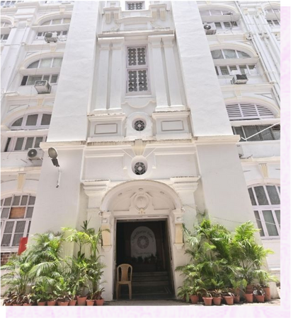

Made for stays
and occasions
Everyday guest comforts, practical transport options and flexible spaces for meetings, weddings and social gatherings.
For resident guests
Comfort, covered
Only facilities published by the property are shown here. Please confirm current availability and any charges with the front desk.
Complimentary breakfast
Breakfast is listed as complimentary for staying guests.
Wi-Fi & entertainment
Wi-Fi, wired internet in listed room categories, cable TV and EPABX/intercom.
Free parking
Free parking is listed; confirm vehicle space before arrival.
Airport & station transfer
Pickup and drop-off can be arranged at additional cost.
24-hour check-out
The property advertises 24-hour check-out facilities; confirm your timing in advance.
Room service
Room service, bottled water and in-room tea and coffee facilities are listed.
Meetings & celebrations
Spaces for every gathering
From board meetings to wedding functions, the property is positioned as a one-stop central Kolkata venue with accommodation on site.

Published capacities
- Conference facilities for 12 to 60 people
- Air-conditioned banquet hall for up to 125 people
- Small banquet hall for up to 45 people
- Separate pure-vegetarian kitchen with store
- Separate non-vegetarian kitchen with store
- In-house decorator, florist and electrical-lighting facilities for banquets
Important to know
What is not advertised
The property does not advertise a swimming pool. We have deliberately excluded generic resort imagery and unverified facilities from this site.